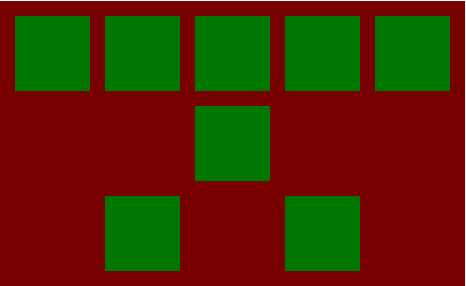

Box model - elementų apimties modelis

Atliekant užduotis nepamirškite nustatyti tinkamus display tipus!
Dokumentacija angliškai
Doukentacija rusiškai
Padding - kamšalas
Naudodami TIK VIENĄ css savybę nustatykite:
- Kamšalą elementams visose pusėse 10px
- Kamšalą elementams šonuose 10px
- Kamšalą elementams viršuje ir apačioje 10px
- Kamšalą elementams visur tik ne dešinėje 10px
- Kamšalą elementams visur tik ne apačioje 10px
- Kamšalą elementams šonuose 20px, viršuje 10px ir apačioje 5px
Margin - paraštės
- Atvaizduokite 5 raudonus blokelius eilutėje atskirtus 10px tarpais
- Atvaizduokite 3 mėlynus blokelius stulpeliu atskirtus 20px tarpais
- Atvaizduokite 200x200 žalią bloką viduryje puslapio
- Atvaizduokite 200x200 raudoną bloką dišinėje puslapio
Kompleksinės užduotys
1. Atvaizduokite 5 žalius blokelius eilutėje atskirtus 10px tarpais ir išlygiuotus dešinėje ekrano pusėje
2. Padarykite tokį vaizdą viduryje ekrano
